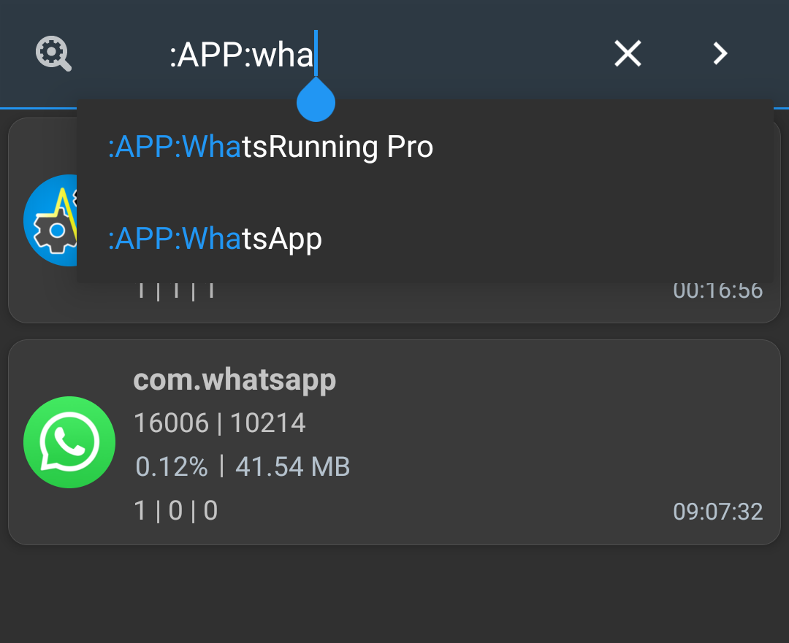

筛选、排序和搜索
您可以过滤您不感兴趣的流程和应用：

您可以用来搜索您所关注的进程列表中的特定内容的长长关键词列表：

您可以应用更长的参数列表来排序流程列表：

- Type: 在流程过滤器中定义的类型。 请查看上面的屏幕截图。
- 内存：内存消耗
- CPU 使用率 / CPU 影响：请参阅“CPU 使用率”与“CPU 影响”有何区别？
- I/O：数据从存储读取并写入存储。 见proc(5)。
- PPID / PID / UID / Age：父进程 id、进程 id、UNIX 用户id 和原生Linux 进程的年龄。 见proc(5)。
- 软件包/活动/服务：在本地过程中运行的应用、可见任务和服务数量。